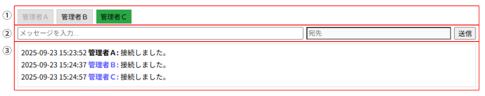

【管理者間チャット機能】
はじめに
SOCKET-MANAGER Framework の GUIランチャーには、管理者同士がリアルタイムにやり取りできる「チャット機能」が搭載されています。
サービス操作の履歴を残すランチャーログとは別に、チャット専用のログも管理されており、運用時のコミュニケーションを後から振り返ることも可能です。
本記事では、チャット機能の画面構成やメッセージ送受信の仕組みに加え、ランチャーログとチャットログの違いについても解説します。
サービス操作の履歴を残すランチャーログとは別に、チャット専用のログも管理されており、運用時のコミュニケーションを後から振り返ることも可能です。
本記事では、チャット機能の画面構成やメッセージ送受信の仕組みに加え、ランチャーログとチャットログの違いについても解説します。
チャット機能の概要
GUIランチャーには、管理者同士がリアルタイムにやり取りできるチャット機能が備わっています。
初回接続時には、オペレータ名をユーザー名として入室し、その接続完了ログが残ると同時に、接続中の全ユーザーに通知されます。
同様に切断時にもログが残り、全ユーザーに配信されるため、誰がいつ参加・離脱したかを明確に把握できます。
接続／切断時のログ
初回接続時には、オペレータ名をユーザー名として入室し、その接続完了ログが残ると同時に、接続中の全ユーザーに通知されます。
同様に切断時にもログが残り、全ユーザーに配信されるため、誰がいつ参加・離脱したかを明確に把握できます。
チャット画面の構成
チャット画面はシンプルながらも運用に必要な要素が揃っています。

チャットフォーム
※ 自身のユーザーボタンは非アクティブ状態になります。
- ①ユーザー名ボタン：接続した順に最上部へ横並びで表示
- ②入力フォーム：メッセージ入力欄、宛先欄（リードオンリー）、送信ボタン
- ③チャットログ表示欄：受信したメッセージが上から順に追加される
※ 自身のユーザーボタンは非アクティブ状態になります。
画面上の機能詳細
チャット画面には、運用時の利便性を高める工夫が盛り込まれています。
最後に発信したユーザーボタン（管理者Ｂ）の点灯
宛先（管理者Ｂボタン押下）指定
自身（管理者Ａ）の発信＝黒色、他者（管理者Ｂ）の発信＝青色
システム発信＝橙色
プライベートメッセージの送信成功
プライベートメッセージの送信失敗
プライベートメッセージ受信
- ユーザーボタンの点灯：最後に発信したユーザーのボタンが緑色に点灯し、新着メッセージの発信者を即座に把握可能
- 宛先指定：任意のユーザーボタンを押すと宛先欄にユーザー名が自動入力される
- 送信ボタンの挙動
- 宛先未指定 → 全ユーザーに配信（通常メッセージ）
- 宛先指定あり → 特定ユーザーにのみ配信（プライベートメッセージ）
- チャットログの表示ルール
- 自分の発信：ユーザー名は黒文字
- 他者の発信：ユーザー名は青文字
- プライベートメッセージ：送信者側は送信成功／失敗ログが残り、受信者側は赤字ユーザー名＋専用背景色＋アイコンで区別表示
- システム発信：ユーザー名は橙文字
ログ管理の仕組み
チャット機能のログは、サービス操作を記録するランチャーログとは別に管理されています。

ランチャーログとチャットログの表示位置
- ランチャーログ
- サービス起動／停止や設定変更などの操作履歴を記録
- 保存形式は daily／monthly を設定ファイルで切り替え可能
- GUI上では専用のログ表示欄に出力
- チャットログ
- 管理者間のメッセージ履歴を記録
- 保存形式は daily のみ
- ランチャーログとは別ファイルに保存され、後から参照可能
- GUI上ではチャット専用の表示欄に出力
運用上のメリット
- 透明性の確保：操作履歴と会話履歴を分離管理することで、監査やトラブルシュート時に混乱を防止
- 即時性の向上：GUI上で操作ログとチャットを並行して確認でき、状況把握がスムーズ
- 振り返り可能：チャットログを後から参照することで、運用時のやり取りを再確認できる
おわりに
GUIランチャーのチャット機能は、管理者間のリアルタイムコミュニケーションを支援する仕組みです。
ランチャーログとチャットログを別々に管理することで、操作履歴と会話履歴を明確に切り分け、運用の透明性と追跡性を両立できます。
他の機能（リソース監視やカスタムモニタリング）と組み合わせることで、より強力で実用的な運用基盤を構築できるでしょう。
ランチャーログとチャットログを別々に管理することで、操作履歴と会話履歴を明確に切り分け、運用の透明性と追跡性を両立できます。
他の機能（リソース監視やカスタムモニタリング）と組み合わせることで、より強力で実用的な運用基盤を構築できるでしょう。